Meet Lynx
A new way to save and input passwords.The Keeper of Secrets
As its ancient mythological reputation implies, Lynx keeps your account information mysterious and secure.
Touch ID Authentication
Nothing says it's you more than your fingerprint. This ensures your account information won't fall into the wrong hands.
Incredibly Flexible
Have Windows? Use Mac OSX? Linux you say? No worries! Lynx runs through a Google Chrome Extension on your computer, meaning it is readily available on any machine you may find yourself at.
Simple, Yet Powerful
Lynx gets out of your way with a beautifully simple User Interface. Seamless communication between the app and the Chrome Extension mean you never have to spend time fiddling with it. It just works, and it works fast.